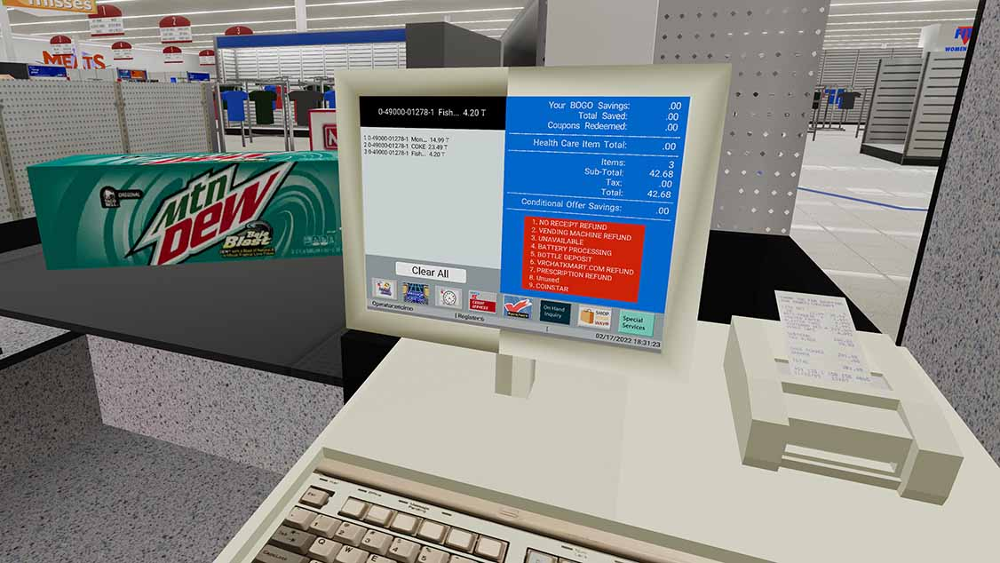
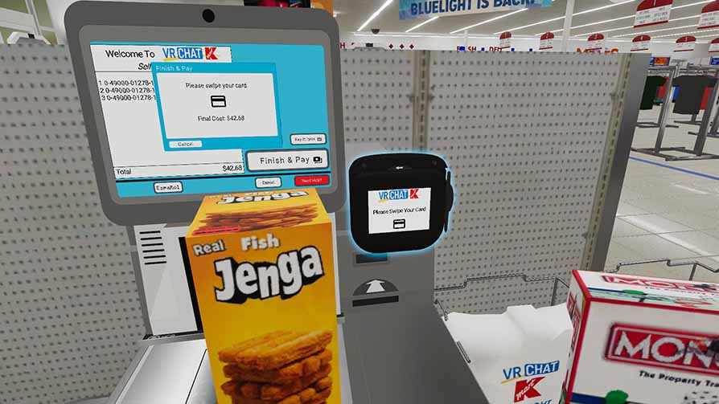
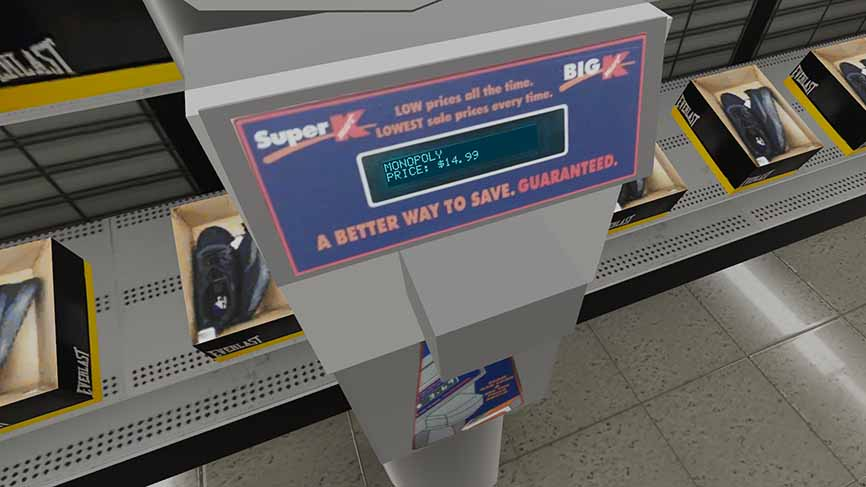
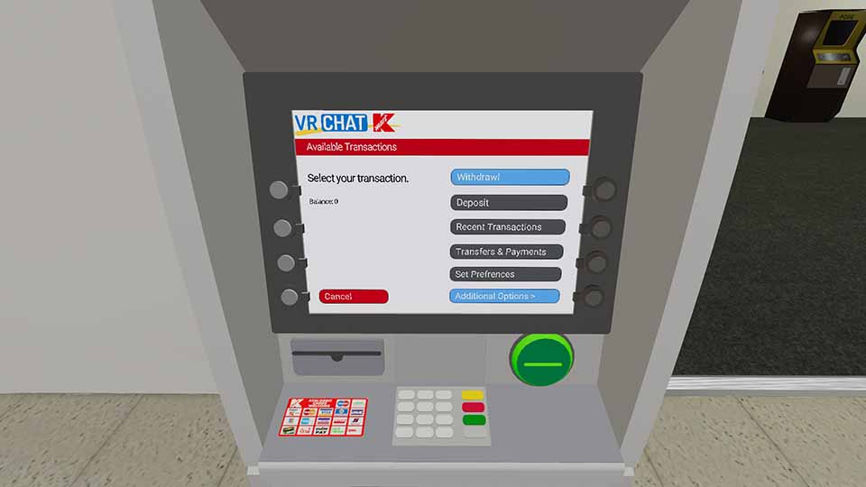

|
February 17th, 2022
Ryan
President, Chief Executive Officer
VRChat Kmart Corp.
Mark Thomas
Udon Programmer and Developer
VRChat Kmart Corp.
SUPER KMART CENTER PIONEERS RETAIL INNOVATIONS IN THE METAVERSE
METAVERSE, VRC., Feb. 17st, 2022
The Development Team at VRChat Kmart has been hard at work making sure our stores run the best they can for our shoppers.
Recently, we have been working on bringing a more interactive shopping experience to the Metaverse with retail innovations that seem practical to anyone that has shopped in a brick-and-mortar store.
Solutions such as Point of Sales registers, Self Checkouts, Price Checkers, Automated Tellers Machines, and functional inventory system with price storage are the latest innovations we're bringing to the Metaverse using Udon Sharp proramming. These systems function just as their real world counterparts do and are intuitive to shoppers and associates alike.
Point of Sales
POS (Point of Sales) registers are based off the IBM SurePOS 700 series used in Kmart stores nationwide, the UI has been recreated to the tee with new HD font and icons. The register can ring up to ten items in a single transaction.

Self Checkout
Self service checkouts used in Super Kmart are based off the NCR FastLane Selfserv Checkouts. The interface is designed from scratch to be user-friendly and easy to understand. Shoppers are able to pay on Self Checouts with their credit or debit card.

Price Checkers
Price scanner units are located around the store so shoppers can instantly see the price of an item. These price checkers do not require use of a bar code as the unit will automatically scan the product placed underneath and check it in the inventory system, displaying the product name and price.

Automated Teller Machine
An Automted Teller Machine (ATM) - located by the Customer Service desk - allows shoppers to see their debit card balance and recent transactions. This feature is a heavy work in progress as there is currently no way to "save progress" in VRChat, but we are actively looking into it.

Inventory Checking and Displaying
Our inventory system is the back bone to the entire store ecosystem. All products have their name, a brief description of the product, and their price associated with the in-game object. When scanned at a POS or price checker, the UPC code, name, and price will be pulled from the system and displayed on the screen for the shopper or associte.
Mark Thomas, the lead programmer on our Development Team, had the following statement: "For me its very fun making these systems. Most of the time I get to learn about old computers that I would never know about anywhere else and I have to deal with figuring out the ways to recreate these systems with the limitations of Udon. Udon does not have everything C# has. Certain stuff is blocked and I cant use so I have to figure out other ways to do these systems. Sometimes I do look around online for solutions or for other Udon people have made to improve my udon skill and the Udon I make. I usually use any reference photos there is and use info from people that used these system to try to get the most authentic experience of using those machines (While also having slight changes to be better for VR and desktop). I love seeing people use the Udon I make to get the best experience in the store. When I have to make a system that we don't have a lot of references about I would look at other stores and use a mixture of designs from their systems to create something new."
VRChat Kmart serves VRChat with 2 discount stores and 1 Super Kmart. Kmart stores serve players from all over the world, with most players coming from the United States. With 300+ associates and a Discord server of 2400+, VRChat Kmart is one of the quickest growing virtual reality retail stores.
|